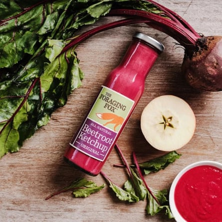
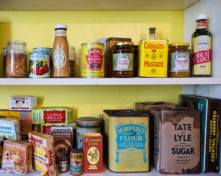

T he choice used to be “red or brown?” but fridge shelves and barbecue trestle tables are heaving under the weight of condiments this summer thanks to gourmet makeovers aimed at “adventurous” taste buds.
There is a “real buzz around condiments right now ”, says Jeff Webster, the managing director of Hunter & Gather, which sells sriracha hot sauce and chipotle and lime “100% avocado oil” mayonnaise. He says people are looking for something that brings “big flavour” to their plate.
Today the horizons of ketchup lovers are no longer limited to tomatoes. There are beetroot, tamarind and even beer flavour ketchups after Brewdog’s recent launch of a variety inspired by its Hazy Jane IPA.
Foraging Fox’s beetroot ketchup.Photograph: PR
If it’s mayo you love the choice is equally mind-boggling, as traditional Hellmann’s competes with everything from wasabi and yuzu flavours to smoked jalapeno and gochujang – Korean fermented red chilli paste. And that’s before you even contemplate the options for barbecue or chilli sauce.
With Britons spending close to £1bn a year on sauces and condiments, companies are shaking things up to win sales as shoppers either trade down from household names into cheaper supermarket own-label sauces, or up – treating themselves to a dollop of something posh and artisanal on their plate.
Indeed almost half (49%) of consumers polled by the online grocer Ocado said they were “more adventurous with sauces than they used to be”. Among 25- to 34-year-olds this figure rose to 72%.
“Legacy sauces like brown sauce and traditional ketchup are losing relevance with younger consumers,” Rumble Romagnoli, the founder of the hot sauce startup Chilli No 5, recently told the industry magazine the Grocer: “These categories are crying out for a refresh.”
Hot sauces exploded in popularity during lockdown when people had time on their hands and started experimenting more in the kitchen. Since then the flavour wagon has moved on to “swicy” – sweet and spicy – flavours, such as hot honey and even “swalcy” – a combination of sweet, salty and spicy.
“We’re seeing so many new products because food has become one of the quickest ways to connect with culture,” says Guy White, the chief executive of the consultancy Catalyx. “Social media, travel, and global communities mean once-local flavours go global almost overnight.
“Flavours don’t stand still. What was once considered niche, for example piri piri or sriracha, is now an everyday staple for many families.” The next wave of sauces will be rooted in regional pride, he predicts, reeling off a list that includes gochujang’s fermented depth, chimichurri’s herbal kick, West African spice mixes, miso-based umami and chipotle layered with honey.
All these new products are eating up space in the fridge, according to Ocado. Three-quarters (74%) of people keep up to seven condiments in there while 16% are hoarding 10.
Tastes have developed in the past 50 years.Photograph: /Alamy
Dave Fendley, the sauce enthusiast behind redorbrown.co.uk – the “premier site for the red or brown sauce debate” – is all for a bigger choice in the condiment aisles as “anything to attract fresh interest is a good thing”.
However, he suggests that some of these flavours are bought for “curiosity’s sake and don’t always get as many repeat uses as their more established traditional peers”. “What they have in artisanal styling and unusual ingredients is sometimes negated by their versatility,” he says. “That is an area the more established varieties have got cornered.”